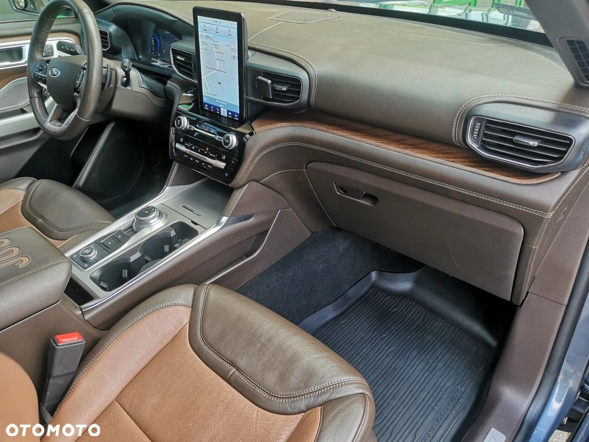
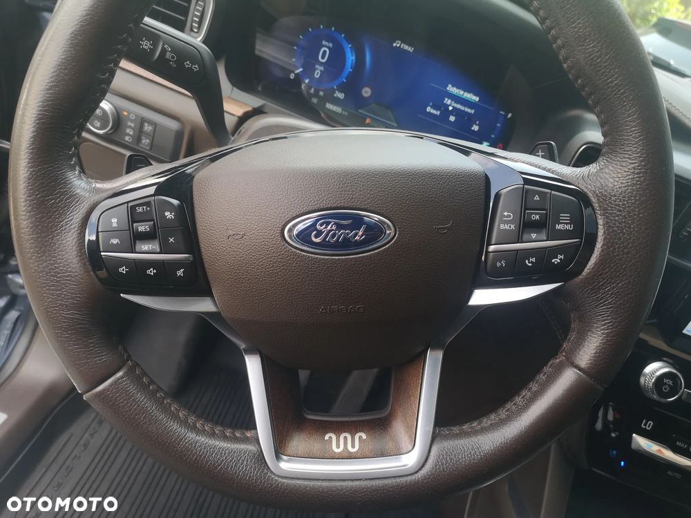
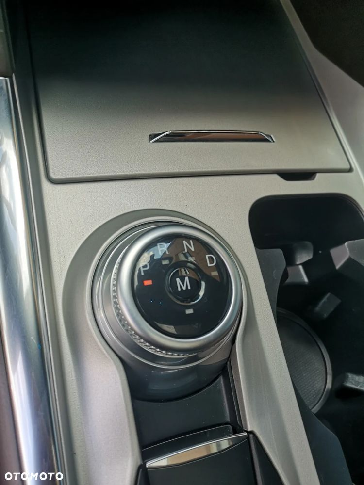
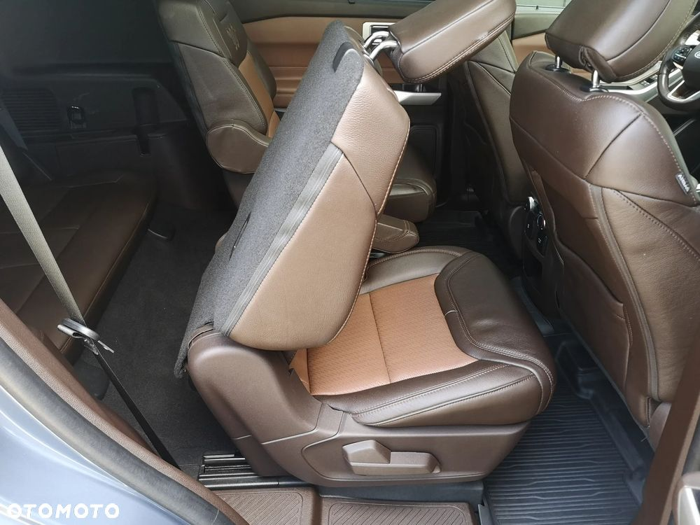
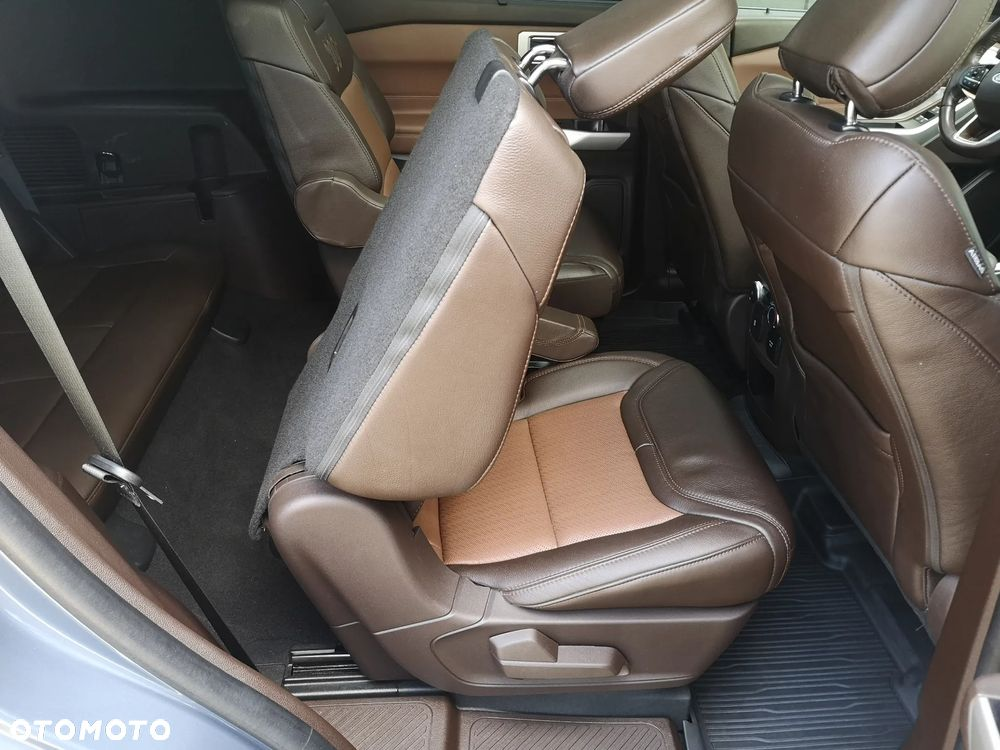

MARKA: F O R D 6-OSOBOWY "KING RANCH"
MODEL: E X P L O R E R 3 , 0 ECOBOOST V 6 4WD
POJEMNOŚĆ/MOC: 2 9 9 6 ccm -- 3 5 0 kM
PRODUKCJA: 2 0 2 1 r.
IMPORT z USA:2 0 2 2.0 9.0 2
DOKUMENTACJA POJAZDU,HISTORIA SERWISOWA
PRZEBIEG AUTENTYCZNY: 1 0 6 . 8 5 0 km
WYPOSAŻENIE:TRZYSTREFOWA K L I M A T Y Z A C J A
"AIR BAG" x 6 PODUSZKI + KURTYNY POWIETRZNE ASYST PASA RUCHU,
ASYST MARTWEGO POLA,
ASYST KONCENTRACJI,
AKTYWNE HAMOWANIE,
AKTYWNY TEMPOMAT/LIMITER,
ASYST ZJAZDU,
STABILIZACJA PRZYCZEPY,
HAK HOLOWNICZY,
AUTO-HOLD,
KLAPA BAGAŻNIKA ELEKTRYCZNA STEROWANA RUCHEM NOGI,
"KEY CODE"OTWIERANIE POJAZDU Z KODEM ELEKTRYCZNE STER.
FOTELE+PAMIĘCI USTAWIEŃ
ALU-FELGI 20",
SKÓRZANA TAPICERKA,
AUTO-ALARM
ELEKTRYCZNA REGULACJA KOLUMNY KIEROWNICY
KOMPUTER POKŁADOWY,
WSPOMAGANIE UKŁADU KIEROWNICZEGO,
"HANDS FREE"ELEKTRONICZNY KLUCZYK,
ENGINE"START&STOP",
LAKIER METALIC
ELEKTRYCZNIE STEROWANE 4 -SZYBY + LUSTERKA PODGRZEWANE/SKŁADANE,
PARKTRONIKI+KAMERA
TRYBY JAZDY:PRZYCZEPA/SPORT/ECO/NORMALNY/ ŚLISKA DROGA/SZUTER/SNIEG/PIASEK,
ŁADOWANIE INDUKCYJNE,
ASYST ŚWIATEŁ DŁUGICH,
"ABS+ESP" REFLEKTORY/DZIENNE"LED"HALOGENY,
WIRTUAL KOKPIT,
FM,SIRIUS XM,APPLE CAR PLAY,
DOTYKOWY PANEL,
BLUETOOTH,
BANG&OLUFSEN,PANORAMA
SKŁADANE DZIELONE TYLNE FOTELE PRZESUWNE ISOFIX,
WIELOFUNKCYJNA SKÓRZANA KIEROWNICA PODGRZEWANA,
KATALIZATOR,
AWD,
AUTOMATIC...
STAN TECHNICZNY POJAZDU BARDZO DOBRY
ŚREDNIE ZUŻYCIE PALIWA: 12 litrów PB / 100 km
CENA: 1 7 9 . 9 0 0 , 0 0 PLN FV MARŻA
STO SIEDEMDZIESIĄT DZIEWIĘĆ TYS.DZIEWIĘĆSET
CENA ZAWIERA PODATEK OD CZYNNOŚCI CYWILNO-PRAWNYCH

 
